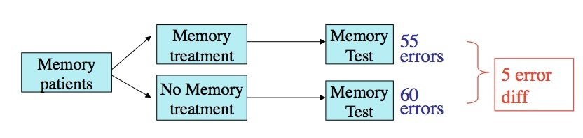
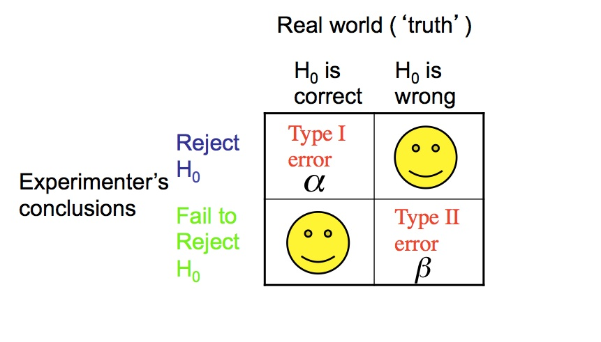
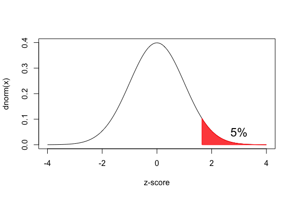
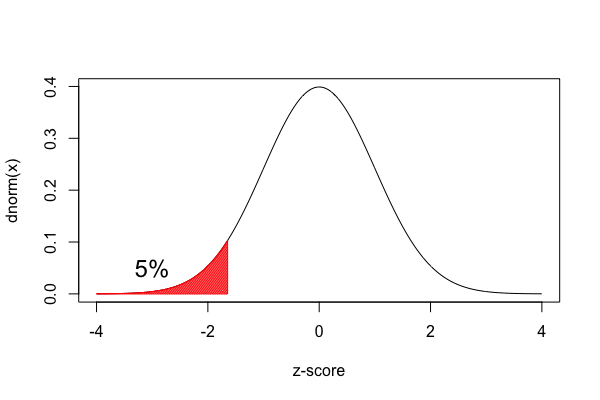
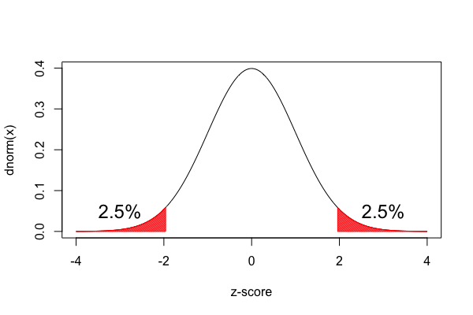
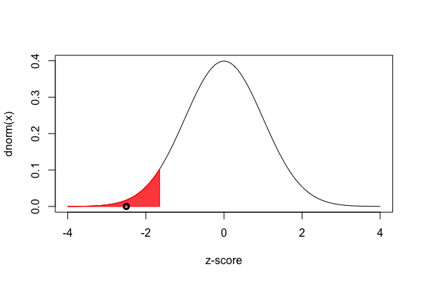

Week 7 lecture notes - PSYC 3330
This week, we will extend our work with samples to hypothesis testing.
An example
Suppose we are interested in testing the effectiveness of a new memory treatment for patients with memory problems.
Before marketing, we need to see if it works!
Of course, the drug is designed to work on all memory patients (the population), but we can't test them all.
So, we decide to do a clinical trial: we take a sample and conduct an experiment.
Based on the results of the sample, we can then make an inference about the effectiveness of the drug for the population.
Our experiment:

Notice the error difference of 5. Is this:
- a "real" difference due to the effect of the treatment?
- or, is it just sampling/measurement error (i.e., noise)
To answer this question, we will perform a hypothesis test, which is a procedure for making decisions about whether the results of a sample support a particular hypothesis about a population.
Core logic of hypothesis testing
- "Double-negative" logic
- We first assume the treatment has no effect (the null hypothesis)
- We then compute the probability that our sample could have resulted from this assumption.
- If this probability is very small (e.g., less than 5%), we reject the null hypothesis
- That is, we say "there is NOT a null effect"..logically, this means the same thing as "there IS an effect"
Five steps of hypothesis testing
- state your hypotheses
- Null hypothesis \(H_0\)
- Alternative hypothesis \(H_1\)
- set your decision criterion
- collect data
- compute test statistic
- make decision about your null hypothesis
Step 1: State your hypotheses
There are two hypotheses that we consider:
- the null hypothesis, denoted \(H_0\) – there is NO effect of memory treatment
- the alternative hypothesis, denoted \(H_1\) – there IS an effect of memory treatment
Note: the hypothesis can take two forms:
- directional – we hypothesize that memory treatment should reduce the number of errors made
- nondirectional – we hypothesize that memory treatment should change the number of errors made
Step 2: Set decision criterion
Our decision criterion is called our alpha (\(\alpha\)) level. It is based on the probability of making certain types of errors, which we want to minimize.
Aside: the types of errors we can make
In hypothesis testing, we are making a decision (either reject \(H_0\) or fail to reject \(H_0\)) about some hypothesis \(H_0\) (which is either correct or incorrect). Hence, there are four possibilities – in two of them, we are correct, but in the other two, we make an error.

Error types:
- Type I error – rejecting \(H_0\) when it is true.
- e.g., finding an effect when there really isn't one
- Type II error - failing to reject \(H_0\) when it is false
- e.g., concluding NO effect when there really IS one
In hypothesis testing, we want to minimize these errors.
- \(\alpha\) = probability of making Type I error
- set \(\alpha\) to be low (usually around 5%)
Step 3 – collect data
We'll talk about this more next semester. In this course, we'll assume this step has already been done for us.
Step 4 – Compute test statistic
Given a sample, we need a way to index the probability that our sample could have come from the null hypothesis. One way to do this is to calculate the \(z\) score for the sample.
\[ z=\frac{\overline{x}-\mu}{\sigma/\sqrt{n}} \]
This \(z\)-score, which we computed last week, is now called the \(z\)-statistic.
Step 5 – Make a decision about null hypothesis
- If the probability of obtaining our \(z\)-statistic is less than \(\alpha\), we reject the null hypothesis
- If not, we fail to reject the null hypothesis
The way we do this in practice is compare our \(z\)-statistic to some critical value. This tells us whether our \(z\)-statistic is "big enough". So how big does it need to be? That depends on your hypothesis.
Directional hypothesis
If the hypothesis is directional, we use a "one-tailed test". In this case, the "rejection region" consists of the upper or lower 5% contained in the right or left tail (respectively)
- if we hypothesize an increase, our rejection region is in the right tail

- if we hypothesize a decrease, our rejection region is in the left tail

If the hypothesis is non-directional, we use a "two-tailed test". In this case, the "rejection region" of 5% is split equally between the two tails (2.5% in each tail).

Critical values
If we look at the standard normal table, we can find the \(z\)-scores that define where these rejection regions are. They are summarized here:
| \(\alpha\) | Type | Critical value |
|---|---|---|
| 0.05 | one-tailed, upper | +1.645 |
| 0.05 | one-tailed, lower | -1.645 |
| 0.05 | two-tailed | \(\pm 1.96\) |
Example 1
Lets put all of this together into an example.
Suppose we give \(n=16\) memory patients a memory treatment that is supposed to reduce the number of errors they make on a standard memory test. It is known that the population of memory patients who take this test make an average of \(\mu=60\) errors with \(\sigma=8\). After treatment, our sample makes an average of \(\overline{x}=55\) errors. Does the memory treatment result in a significant reduction of memory errors?
Step 1 – state hypotheses
- \(H_0\): no reduction in memory errors
- \(H_1\): there is a reduction in memory errors
Step 2 – set decision criterion
As is common in psychology, we set \(\alpha=0.05\).
Step 3 – collect data
This is given to us: \(\overline{x}=55\).
Step 4 – compute test statistic
We compute our \(z\)-statistic:
\[ z=\frac{\overline{x}-\mu}{\sigma/\sqrt{n}} = \frac{55-60}{8/\sqrt{16}}=\frac{-5}{2} = -2.5 \]
Step 5 – make decision
With a one-tailed test where we predict a decrease, our critical value is \(z_{\text{crit}}=-1.645\). Since \(z=-2.5\) exceeds \(z_{\text{crit}}=-1.645\) (see figure below), we reject the null and conclude that there IS a signficant reduction in memory errors after treatment.

Notice how our \(z\)-statistic (the circle) falls in the red rejection region.